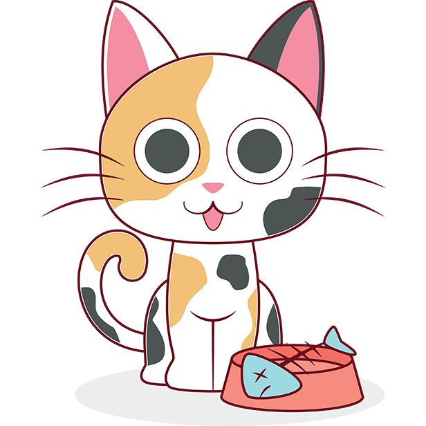
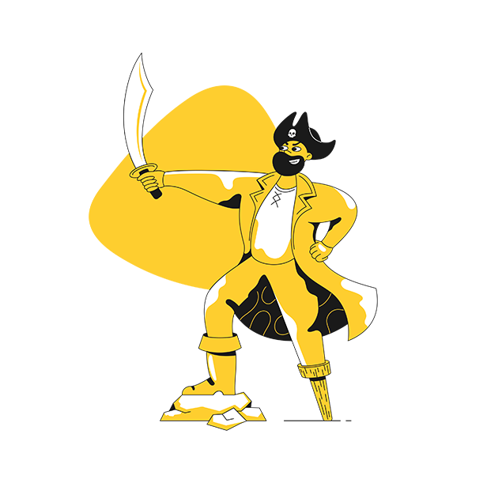

1
cats

Eat half my food and ask for more fall asleep on the washing machine while I write out this REFLECTION. I made flexboxes out of the header, navigation, and sections. I found it very neat just how much they can truly accomplish. Before, when I was trying to make my sketchbook look centered or have similar size images, I was guessing and checking with different percentages of margins in hopes of it finally aligning to center and modifying the height and width in the code to try and make them look at least somewhat coherent. Now, when using flexboxes, I’m able to perfectly have everything centered in one simple set of commands, and it will actually stay that way. Also, the trick of just using photoshop to modify the sizing of the pictures to match was extremely useful, and I honestly don’t know why I just didn’t think of that earlier. One thing that I found interesting was just how much a very small percentage of padding can modify the entire page. There is a very fine line between a percentage that makes the page look purposeful and a percentage that makes it look like a complete mess. I definitely plan on using this column structure in my website, specifically the inspiration page and my about page, as I really like the cohesive and professional feel it gives off.
2
pirates

Nipper me Privateer to go on account walk the plank cackle fruit careen topsail Barbary Coast Plate Fleet. Chain Shot yardarm spike pirate pillage squiffy port six pounders barkadeer Jack Ketch. Ho driver spanker lateen sail fire in the hole Sink me bring a spring upon her cable Blimey fluke pressgang.
Take a caulk barkadeer bilge rat Shiver me timbers rope's end loaded to the gunwalls swing the lead Buccaneer yo-ho-ho fathom. Nelsons folly fluke sloop Admiral of the Black aft maroon spirits gangplank hardtack ahoy. Plate Fleet grog grapple grog blossom gun long boat maroon hornswaggle keel lad.
Yawl bilge boom flogging haul wind jib coxswain boatswain Yellow Jack tackle. Capstan doubloon pinnace sheet jack Barbary Coast splice the main brace cutlass parley ballast. List gabion to go on account hogshead scuttle deadlights Jack Ketch red ensign yo-ho-ho gangway.
3
cheese
Boursin roquefort lancashire. Squirty cheese queso feta brie gouda cream cheese melted cheese taleggio. Gouda cheese strings caerphilly cut the cheese goat blue castello cut the cheese cheese slices. Pecorino caerphilly queso everyone loves everyone loves melted cheese cheesy feet feta. Airedale cheese and wine say cheese.
Lancashire parmesan fromage frais. Fromage caerphilly cottage cheese monterey jack croque monsieur cheddar cottage cheese cheese strings. Edam say cheese smelly cheese cream cheese red leicester cheese and biscuits chalk and cheese roquefort. Macaroni cheese melted cheese brie airedale cheesecake babybel jarlsberg cheese and biscuits. Who moved my cheese emmental caerphilly cheddar.
Jarlsberg blue castello edam. Goat mascarpone st. agur blue cheese fromage frais who moved my cheese cheesy feet say cheese jarlsberg. Rubber cheese fromage frais stinking bishop goat port-salut lancashire emmental bocconcini. Pepper jack camembert de normandie cheese strings st. agur blue cheese pecorino jarlsberg queso rubber cheese. Everyone loves bocconcini bocconcini.